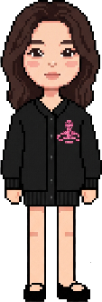
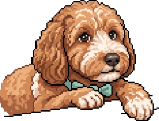

MEET SOOMIN !
HI, I'M SOOMIN.

TRIVIA
×
Seoul, KR
KMBA (2025~) · Global Business Analytics
Carnegie Mellon University 방문 연구원 (Visiting Scholar) - 2026
시장조사 5년+
관심사 : 둘리
LINKS
×
github.com/soomin1996

PROFILE.EXE
×
GET
/profile
데이터 불러오기
대기 중
// 버튼을 누르면 서버 응답이 여기에 출력됩니다
창 제목표시줄을 끌어 옮길 수 있습니다